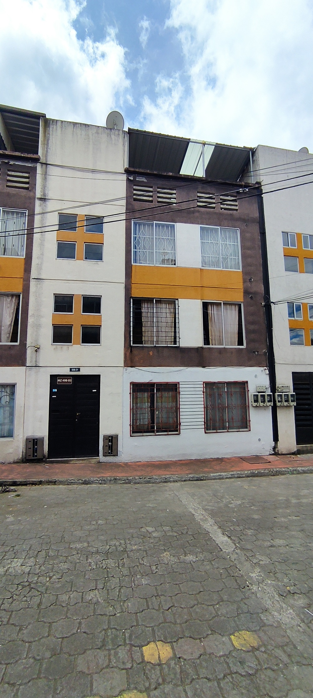
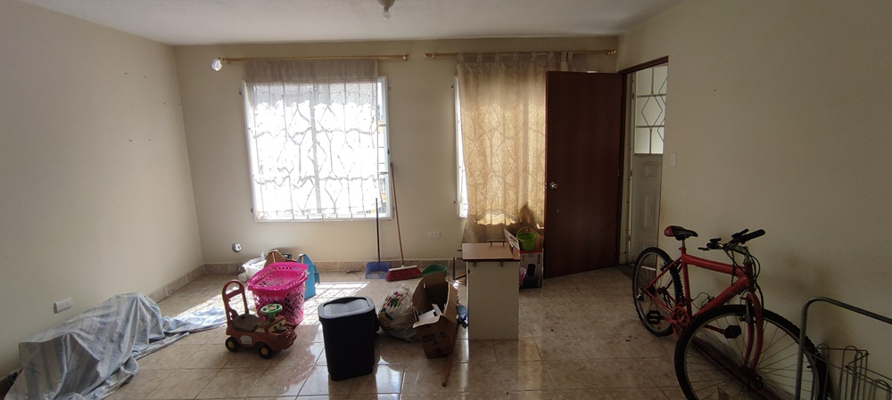
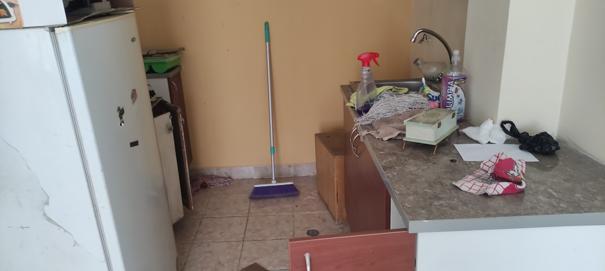
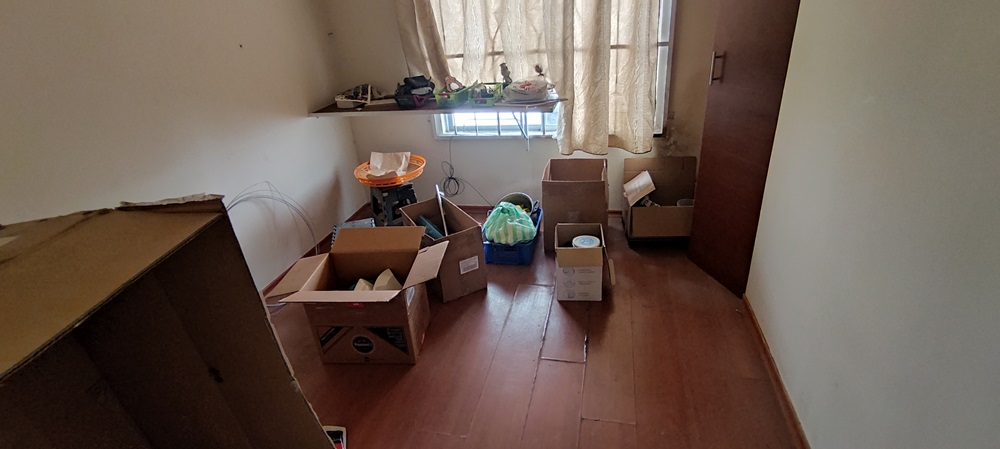
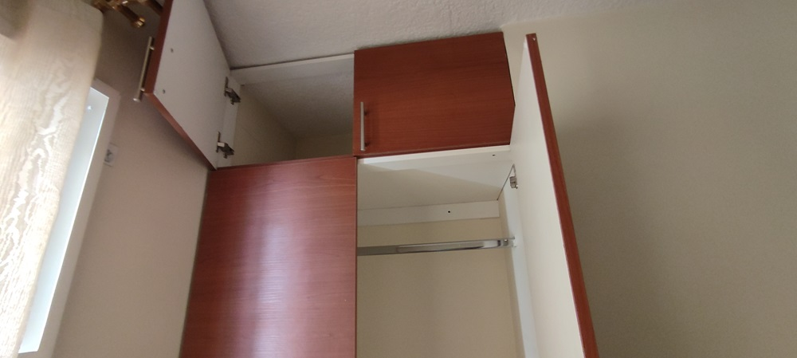
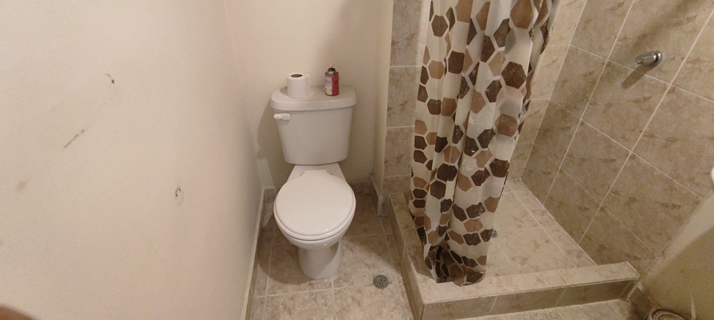
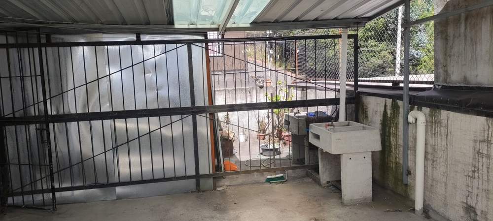

← volver al mapa
Departamento - EC-RJ-155651
EC-RJ-155651 · departamento · QUITO, Pichincha
★ Oferta destacada







Datos del remate
| Avalúo pericial | $24,251 |
| Tipo de bien | departamento |
| Área de construcción | 48.75 m² |
| Área de terreno | 144.00 m² |
| Cantón / Provincia | QUITO, Pichincha |
| Dirección / Sector | PARROQUIA TURUBAMBA. provincia de pichincha; cantón quito; parroquia turubamba; barrio/sector: bellavista del sur; departamento 302 mz 49, bloque 3, edificio tipo c del proyecto inmobiliario divino niño; calle c; predio no. 3661408; clave catastral: 3310326019001003002. |
| Señalamiento | Retasa de Bienes |
| Fecha de remate | 2026-08-28 |
| No. de proceso | 17233202200051 |
Análisis vs. mercado
| Avalúo por m² | $497/m² |
| Mediana de mercado en la zona | $862/m² |
| Descuento vs. mercado | 42.3% |
| Comparables usados | 55 |
| Radio de búsqueda | 2000 m |
| Puntaje | 85/100 |
Descripción completa del avalúo
el departamento 302, se encuentra ubicado en la tercera planta del edificio tipo c, del proyecto inmoviliario divino niño, edificio implantado en tres pisos y declarado bajo el régimen de propiedad horizontal. el departamento cuenta con los siguinetes ambientes: dos dormitorios, sala – comedor, cocina, un baño completo y cuenta con terraza cuatro, la misma que tiene una lavandería y secadero cubierto.
edad de la construcción ocho años aproximadamente, estructura de hormigón armado, cubierta plana de losa de hormigón, mamposterías de bloque de cemento enlucidas y pintadas; cielo raso chafado; pisos: cerámica; ventanas de aluminio y vidrio con reja; puertas de madera tamborada, closet en malamínico, muebles altos y bajos en cocina en melamínico; piezas sanitarias blanca nacional. el edificio cuenta con puerta de ingreso en hierro.
provincia de pichincha; cantón quito; parroquia turubamba; barrio/sector: bellavista del sur; departamento 302 mz 49, bloque 3, edificio tipo c del proyecto inmobiliario divino niño; calle c; predio no. 3661408; clave catastral: 3310326019001003002.
Límites: departamento trescientos dos: norte: en 4.20 m escaleras comunales; 4.80 m departamento 301; sur: 9.00 m predio colindante; este: 6.00 m vacío sobre jardín posterior; oeste: 4.75 m vacío sobre calle c; 1.25 m escaleras comunales; superior: 48.75 m2 losa de entrepiso con terraza comunal nivel mas 7.85 m; inferior: 48.75 m2 losa de entrepiso con departamento "202" nivel mas 5.30 m; alícuota: 12,1708%; área 48.75 m2. terraza cuatro: norte: 2.95 m escaleras comunales; 1.20 m circulación comunal terraza; sur: 4.15 m predio colindante; este: 4.55 m área de terraza 3; oeste: 4.55 m circulación comunal terraza; arriba: 18.88 m2 cielo abierto; abajo: 18.88 m2 losa de entrepiso con dep. 302; nivel 7.85; alícuota 4.7135%; área 18.88 m2.
Clave catastral: 3310326019001003002
Análisis de inversión
★ Buena oportunidadBuen descuento (42%); 8 años de antigüedad, buen estado general.
A favor:
- Buen descuento
- Construcción relativamente nueva
Análisis elaborado a partir de la descripción del avalúo — no es asesoría legal ni financiera.
Esta ficha es una copia de lo publicado en el sitio oficial de remates
judiciales de la Función Judicial del Ecuador, para consulta — no
reemplaza el expediente judicial. remates.funcionjudicial.gob.ec no da
un link propio por remate, por eso se generó esta página aparte.
Antes de ofertar, el expediente debe revisarlo un abogado.